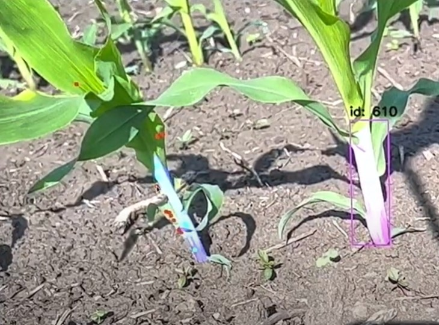

Design Specification
Summary of the detection specification (e.g accuracy in 2D, 3D, inference speed, training with sparse dataset).
Summary of 2D detection, 3D transformation, best stalk detection, rejecting out of reach stalk.
This pipeline is meant as a plug-and-play system, meaning it can be applied to varying similar problems with little interference.
Each part of the pipeline can be swapped out with different alternatives, which may work better under certain environment conditions, like camera field of view, ground plane visibility, ground plane smoothness, point cloud density and accuracy, etc.
2D Detection
Description of the 2D detector, architecture used, input/output format.
Intuition of how well this works (robust in what conditions), when it fails...why does it fail?
Grasp Point Estimation
Description of Pointcloud processing.
Description of why single-view partial pcloud is sufficient.
Transformation of world coordinate.
Intuition of where best grasp point is relative to the ground.
Best Stalk Determination
Intuition of what's the best stalk and how to reject bad ones.
Evaluation Metric
Discuss how to measure our evaluation, and include a table or plot.
Dataset Labeling
Overview of the labeling process. Dataset size and format.

Manually selecting points with similar features.